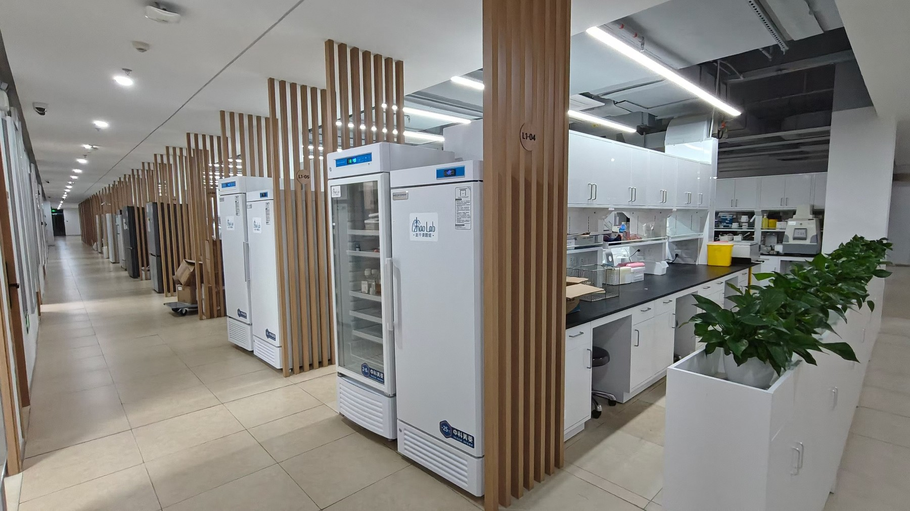
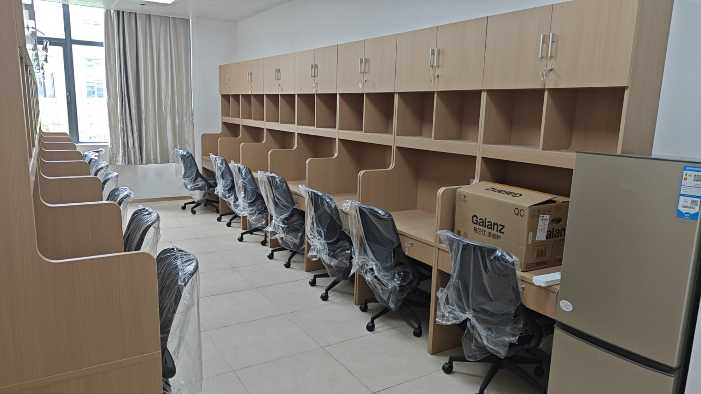
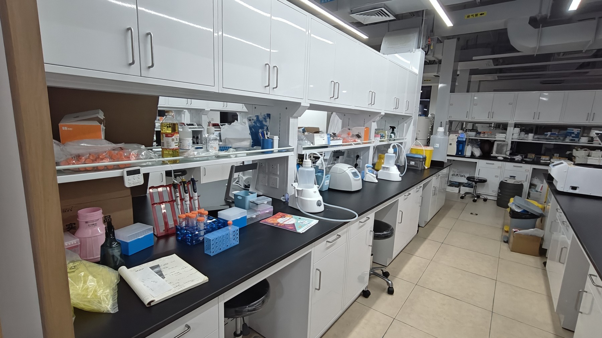
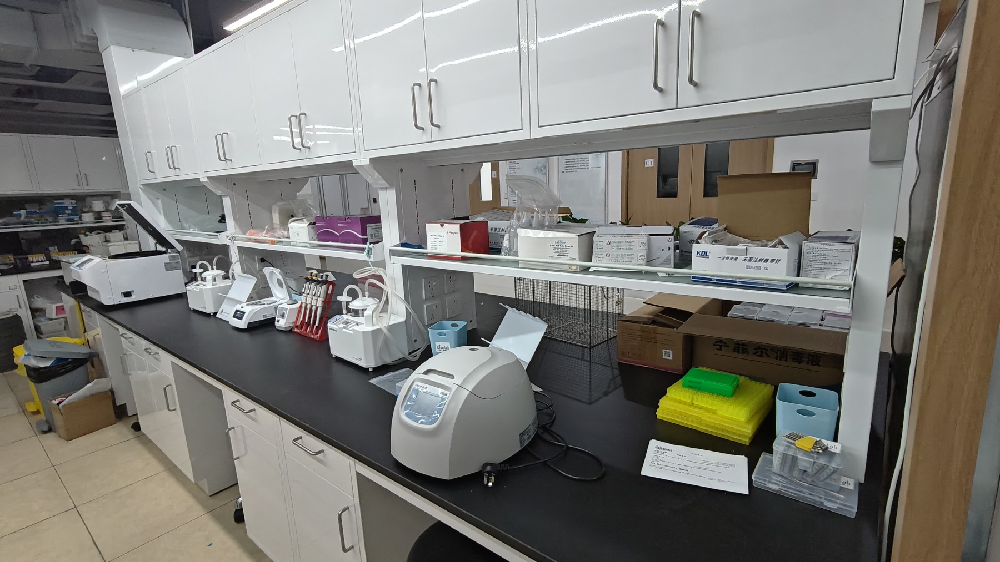
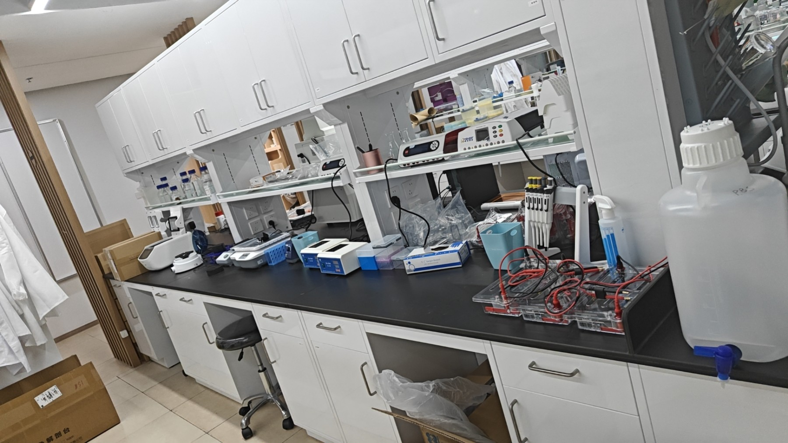
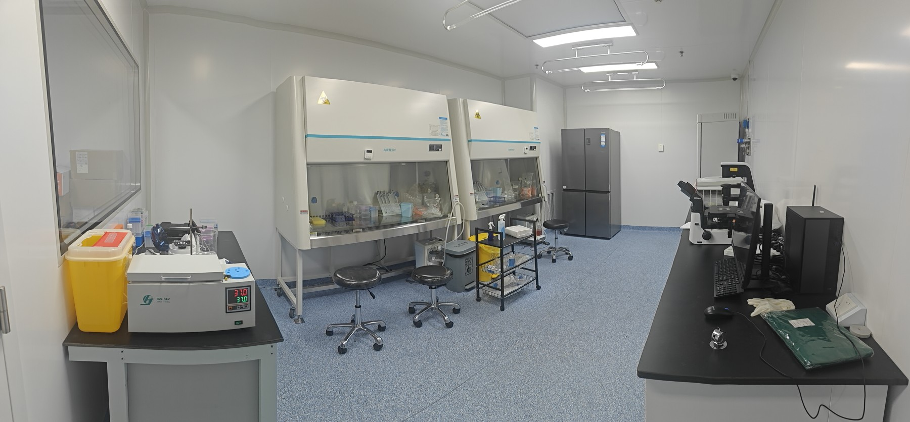
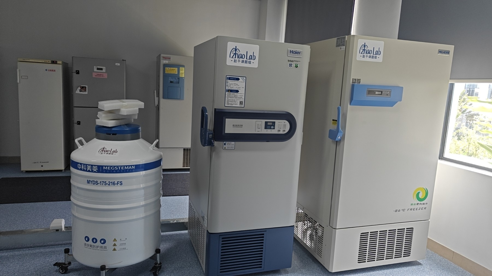

GAN ZHAO LAB · 厦门大学
加入我们
共同探索肺损伤修复、再生医学和转化研究的重要科学问题。
与我们一起开展科研探索
欢迎对肺再生、血管生物学、免疫–组织互作和生物医学技术感兴趣的研究生、博士后及合作研究者联系。
有意者可发送个人简介、简历、研究兴趣及相关经历。
zhaogan@xmu.edu.cn ↗科研与生活空间







合作交流
国际合作
宾夕法尼亚大学 · Edward Morrisey 团队
宾夕法尼亚大学 · Andrew Vaughan 团队
国内合作
厦门大学 · 许韧教授团队
厦门大学 · 曹彬教授团队
南京大学 · 薛璐璐教授团队
东南大学 · 肖泽彬教授团队
厦门大学附属第一医院相关科室